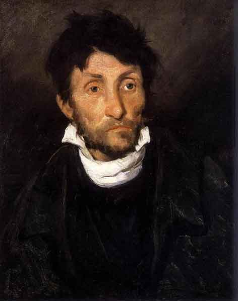

Daniele è nato a Bologna, dove ancora vive. Frequenta il liceo scientifico tradizionale. Da qualche anno si è appassionato al disegno,in particolare, alcune delle tecniche che preferisce sono:
un esempio di ritratto fatto con i pastelli ad olio è questo:
Daniele ha riprodotto questo dipinto, ecco la sua versione:

questo è il link per avere altre idee di cosa sono i pastelli ad olio e dei dipinti che si possono fare.